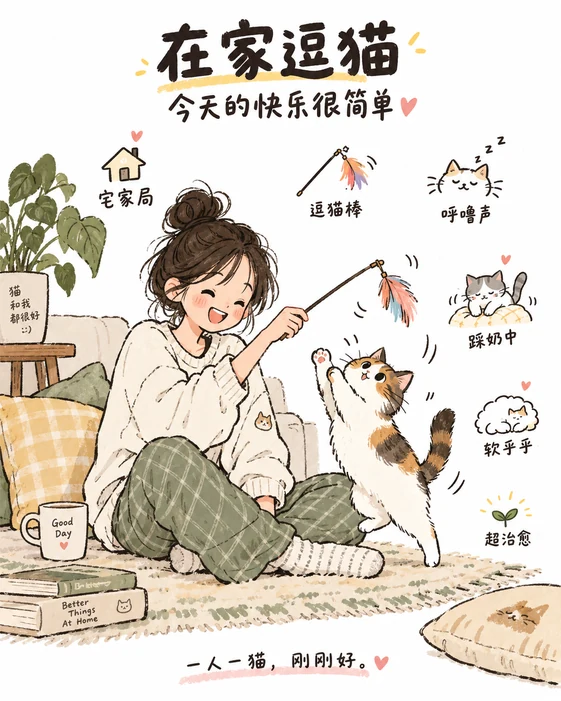
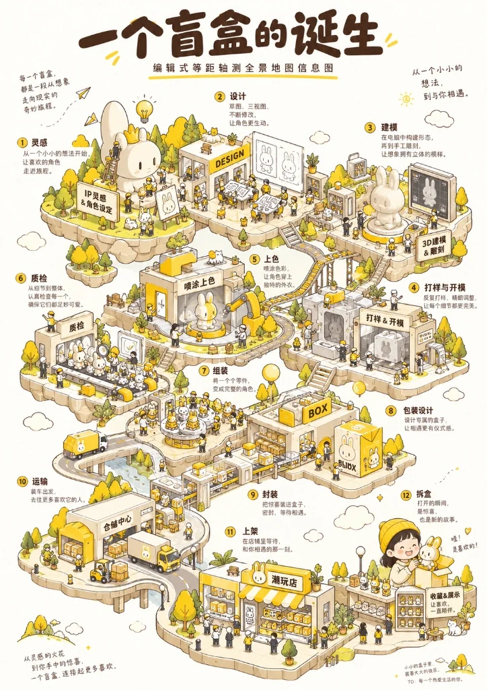

社媒卡SC-014图文一体
594 条编号素材：372 种画风、170 种排版图型、36 种主题色、16 种影调。挑一个模板，写一句主题，剩下的交给拼装器——它按素材原文把你选的画风、版式、配色拼成一段可直接出图的提示词。

社媒卡 信息图
信息图 社媒卡
社媒卡
信息图 漫画分镜
漫画分镜 电商
电商 社媒卡
社媒卡素材与提示词来自 yang0/handraw-style（v1.9.13，编号与原库一致，未作改写）· MIT License with Attribution Requirement · 首次浏览时按需下载示例图，可在右上「同步素材」一次性缓存全部 594 张。
画风：Watercolor Handwritten Life Notes（FA-021） 参考风格名称：Mari Andrew 纯视觉画风特征（禁止照抄示例主体）：极简女性人物、细黑线、细长四肢、柔和水彩点染… 主题色：克莱因蓝（Klein Blue）。 主题：为什么搬家以后，我反而更常做早餐了 画幅比例：3:4 排版图型（SC-014）：小红书社媒卡。整体保留大面积留白…